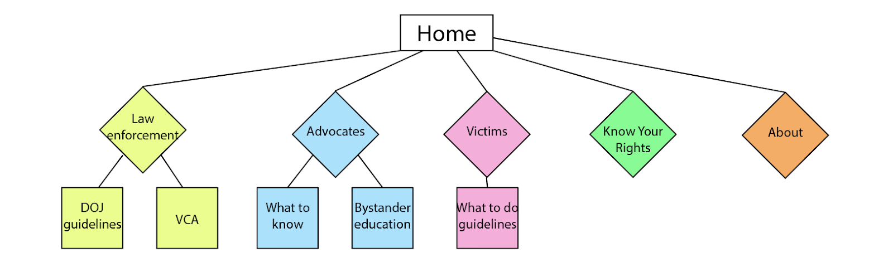

My Team: Latin America Team
- Amanda Barry
- Mackenzie Miller
- Maria Aguilar
- COURAGE team member: Fernando Bertoncello
For this project, the class was divided into teams of 3-4 students to conduct design thinking and goal directed design. The aim is to propose design solutions to further COURAGE’s work to “identify good practices and increase accountability” regarding domestic violence and sexual assault, both in the U.S. and globally. 2 teams will be assigned to look at the issue at the local/domestic level and 3 teams will be focused at looking at the issue from a global perspective to understand how the needs compare and contrast. For this assignment, my team of 3 took a global perspective, focusing on Latin America.
For this course assignment, we will employ human centered design (HCD) techniques both in-class and outside of class to identify target stakeholders and users and their needs. A team member from COURAGE specializing on this topic will be available to us. This includes but is not limited to stakeholder mapping, interviewing, and competitive analysis of things they are currently using.
In class, before meeting our COURAGE team member, we did some brainstorming about our stakeholders and we got our Stakeholder Mapping diagram, as shown below:
We had a joint class with the UM law students to perform some design thinking activities. Below are some pictures taken from UM Interactive Instagram!
For this method we should keep in mind the following key:
a. Rose: Red post-its, representing positive ideas.
b. Bud: Yellow post-its, representing opportunities and potential ideas.
c. Thorn: Blue post-its, representing negative ideas.
.
Sitemap: 
The link to our interactive prototype is here.
.